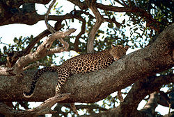
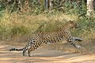
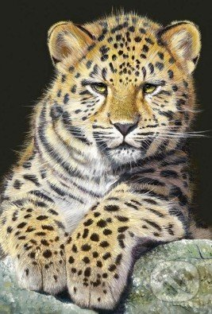

Leopard škvrnitý(iné názvy: leopard, panter, pardál; zastarano: levhart alebo levopard; lat. Panthera pardus) je mäsožravý cicavec z čeľade mačkovité. Leopard škvrnitý je výzorom a potravou veľmi premenlivý a veľmi rozšírený (strava zahŕňa chrobáky lajniaky či veľké cicavce). Veľká korisť mu vystačí na 2 týždne. Rodia sa v priemere 2 mláďatá po 90 - 105 dňoch gravidity. Mláďatá sa rodia slepé. Veľká hlava má silné čeľustné svaly, ktoré umožňujú zahryznúť sa do koristi, usmrtiť ju a roztrhať, aj plecia a predné nohy sú veľmi svalnaté. Leopard je vynikajúci lezec a vďaka nesmiernej sile vytiahne korisť na korunu stromu, kde ju hneď požiera alebo si ju skryje na neskôr. U leoparda škvrnitého sa vyskytuje melanizmus. Výsledkom genetickej mutácie je to, že koža a srsť obsahuje veľa tmavého pigmentu-melanínu. Melanické leopardy, známe ako „čierne pantery“, žijú hlavne vo vlhkých hustých pralesoch a voľakedy sa považovali za samostatný druh. Na púšťach sú leopardy krémovožlté, v trávnatých oblastiach tmavožlté.
  